This section follows one roof in eight steps: the finished roof, its layers lifted apart, one corner panel lifted out, that panel in summer heat, Santa Ana wind and winter rain, the panel returning, and the roof closing again. Each step is described in text; the moving picture only illustrates it.
Every layer has a job.
Scroll beneath the surface.
An illustrated look at the shingle system named in JM Roofing's own project posts: Owens Corning Duration COOL. Pending owner confirmation
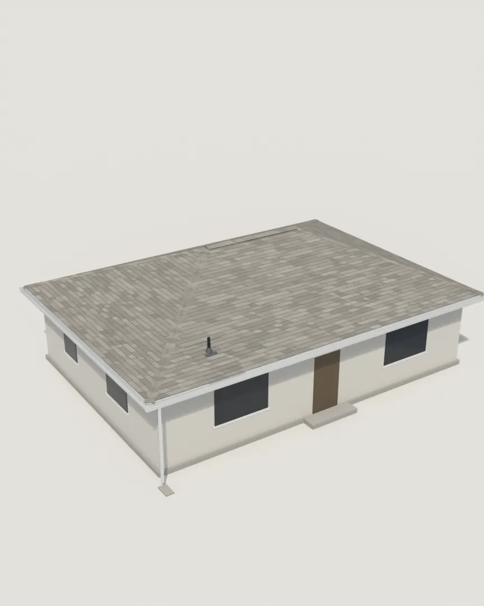
Five layers, and the air under them.
- Hip and ridge caps close the lines where two slopes meet. A ridge vent sits under the ridge caps (vent type to be confirmed).
- Laminated shingles are the weather surface. Mineral granules shield the asphalt from the sun.
- Underlayment is a second water barrier over the whole deck.
- Drip edge is metal at the eave that carries water off the deck edge. At the eave, the underlayment laps over it.
- Roof deck is the solid wood sheathing that holds the fasteners.
- Attic air comes in through the soffit vent and leaves near the ridge.
- Ceiling insulation sits below the attic. It is not part of the roof and is shown for context.
Conceptual illustration, not construction guidance.
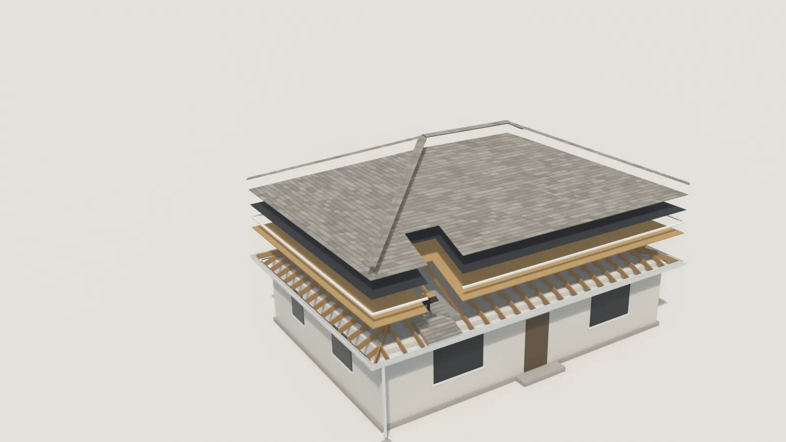
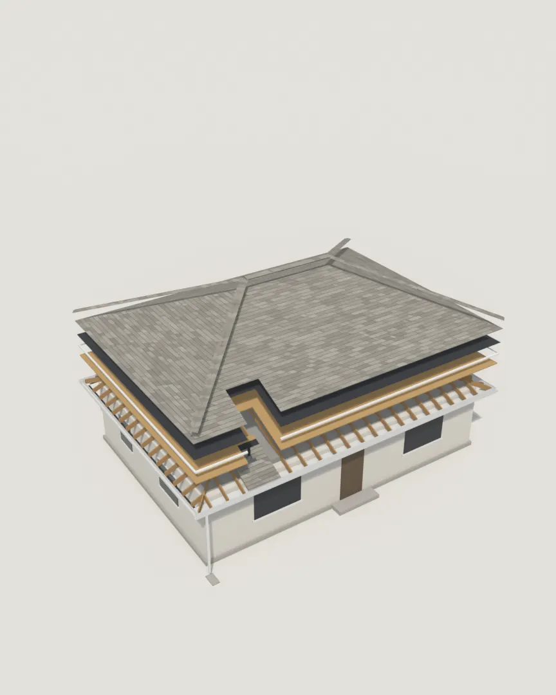
One corner, every layer.
A section of the eave corner lifts out with everything in it: shingle courses, a vent pipe and its boot, underlayment, deck, soffit vent and gutter. It is cut from the same roof and never changes shape.
Illustration of how each layer works. Not a product test.
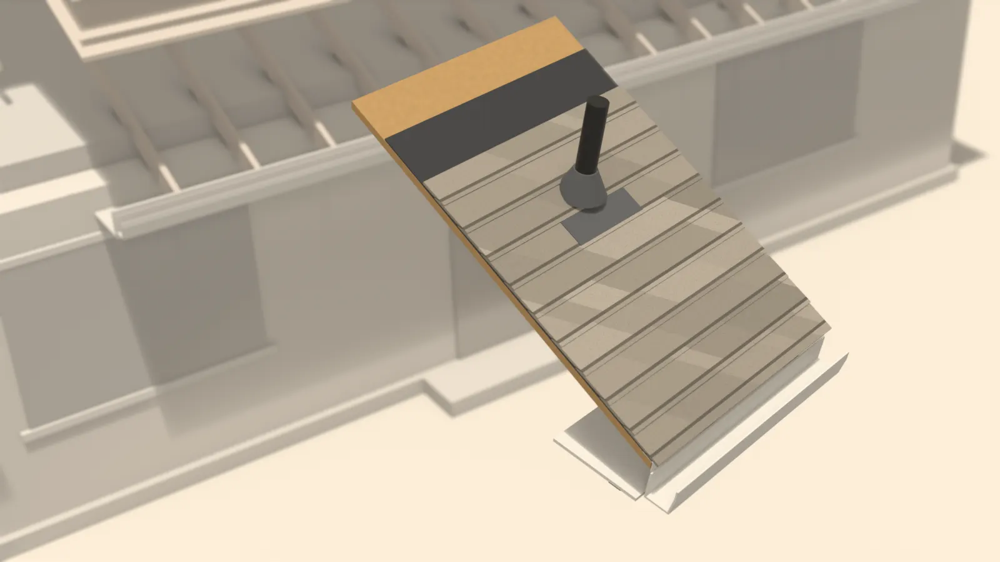

Heat
- Reflective granules send part of the sunlight back. Duration COOL in Oyster Shell carries a Cool Roof Rating Council listing (CRRC 0890-0012, per Owens Corning).
- The sun's heat softens the sealant strip under each shingle, bonding it to the one below.
- Attic air comes in at the soffit and carries heat out near the ridge.

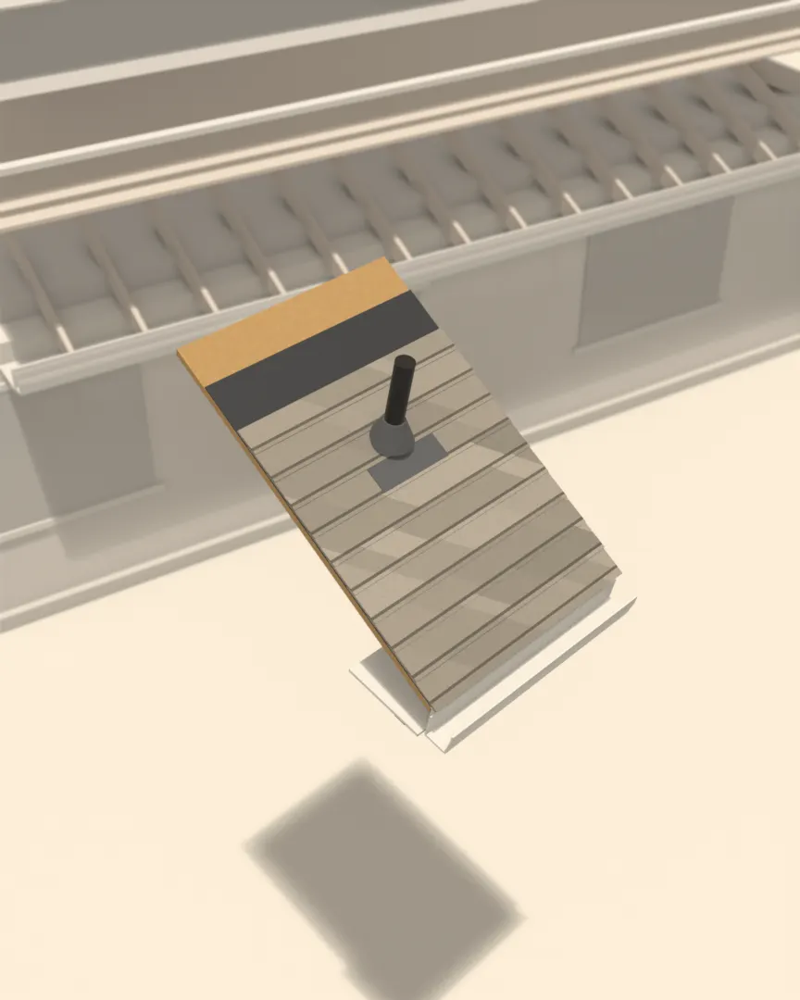
Wind
- Santa Ana winds blow off the inland deserts, mostly between fall and spring.
- The bond the summer sun set is where most of a shingle's wind resistance comes from.
- Nails sit in the nailing zone, hidden under the next course. A starter course seals the first edge at the eave.
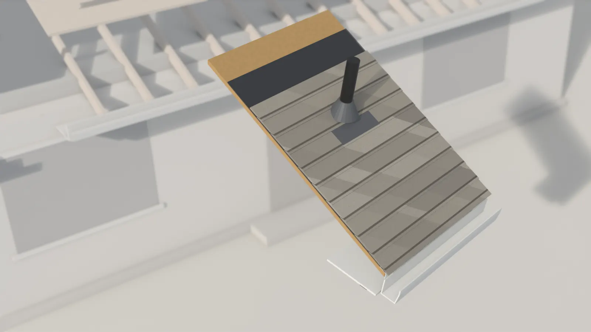
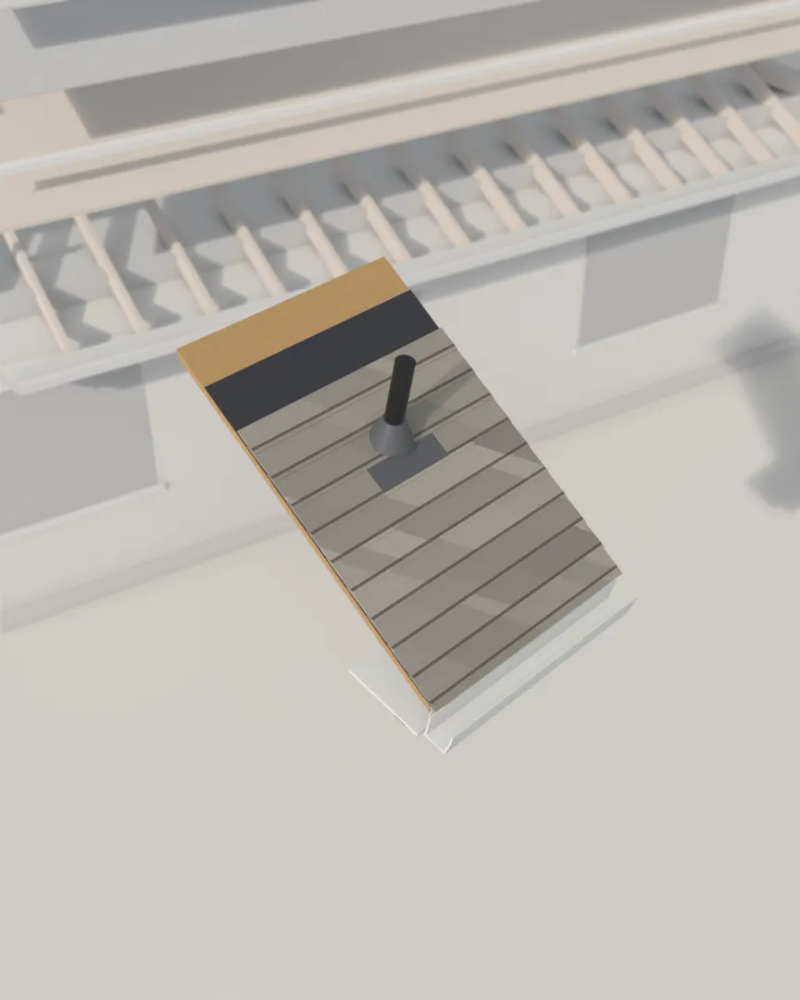
Rain
- Each course overlaps the one below, so water runs onto the next shingle, not behind it.
- Around the vent pipe, a flashing boot sheds water past the opening.
- At the eave, water leaves over the drip edge into the gutter. Underneath, the underlayment is a second barrier.
- Then the storm clears and the gutter drains.
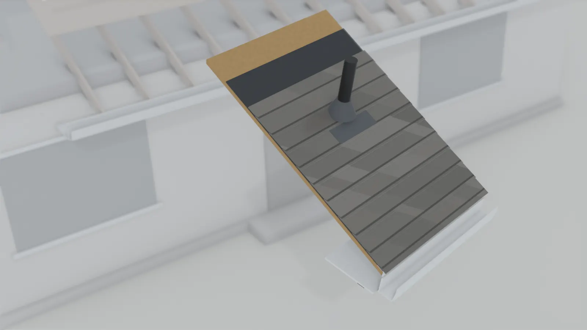
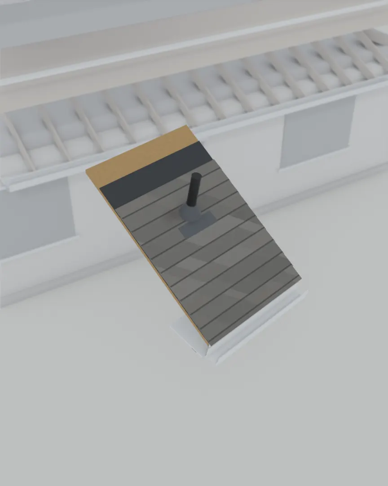
Back to the exact spot.
The panel travels the same path home and lands where it started, carrying what it showed back into the roof.
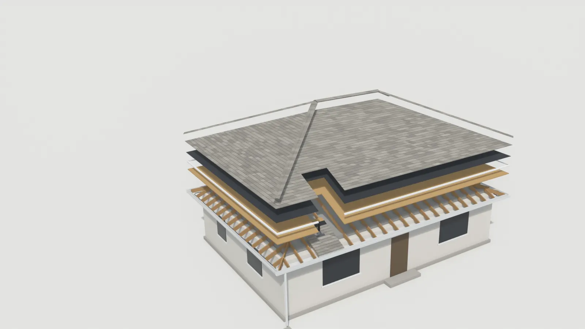
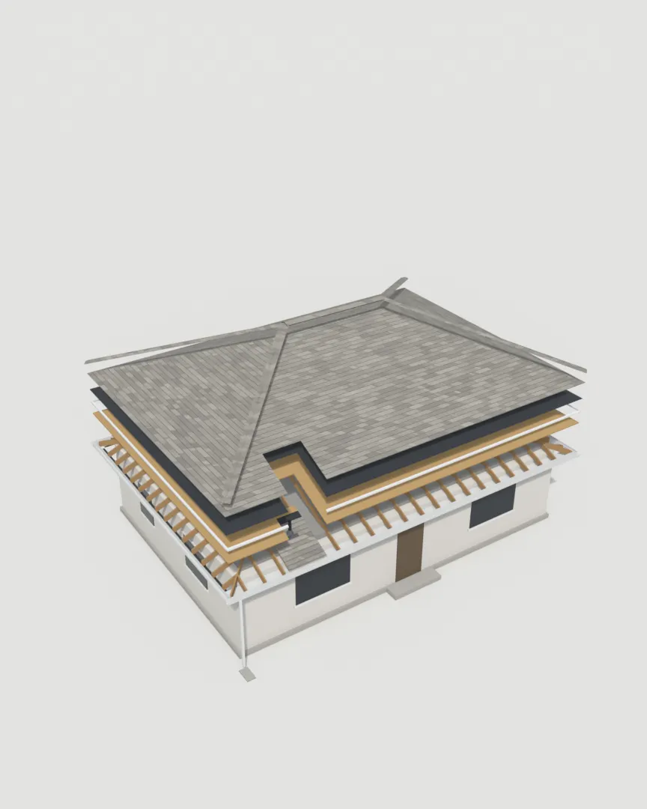
Every layer. Working together.
Deck, drip edge, underlayment, shingles, then the caps. The last ridge cap closes the roof.
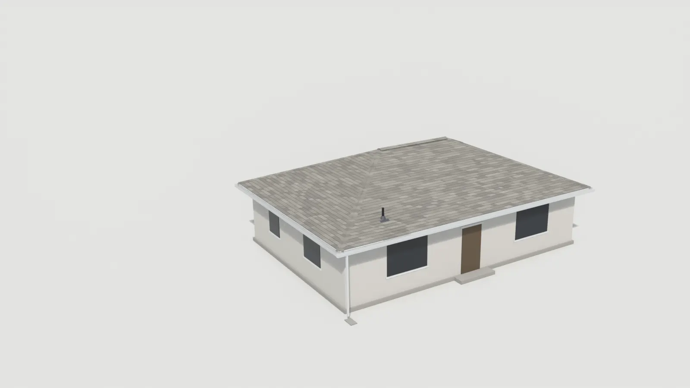
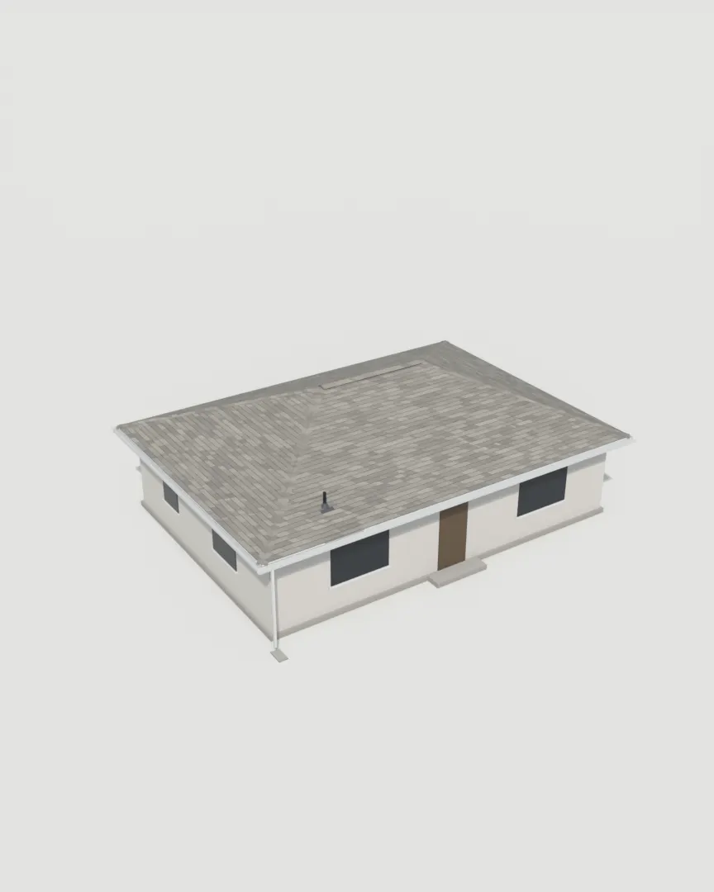
What can be checked today.
Only facts verified from public records, each dated. Project photos and reviews wait for the owner's permission.
- Contractor license
- CSLB #1084651
- C39 Roofing · Active through Dec 31, 2027
- Checked at cslb.ca.gov on Sep 30, 2026 · Look up a license
- Bond
- On file
- Contractor's bond on file with the CSLB.
- Checked at cslb.ca.gov on Sep 30, 2026
- Ratings, as of Sep 30, 2026
- Every platform shown, including the lowest.
- Roof system in this illustration
- Modeled on Owens Corning Duration COOL, Oyster Shell: the product and color named in JM Roofing's own project posts.
- Pending owner confirmation
Project and review slots waiting for owner assets
City of Bell reroof · Duration COOL, Oyster Shell
Needed: full-resolution original, homeowner consent, month and year.
4-unit new-construction roof · Duration, Oyster Shell
Needed: drone original and written permission.
Shasta White shingles with a Polyfresko G flat section
Needed: before and after originals, homeowner consent.
Customer review
Needed: the reviewer's permission, or the platform's own embed.
Built for everything.
Get an estimate.
Concept preview. This form is not active and sends nothing.
Or call (323) 245-9154.